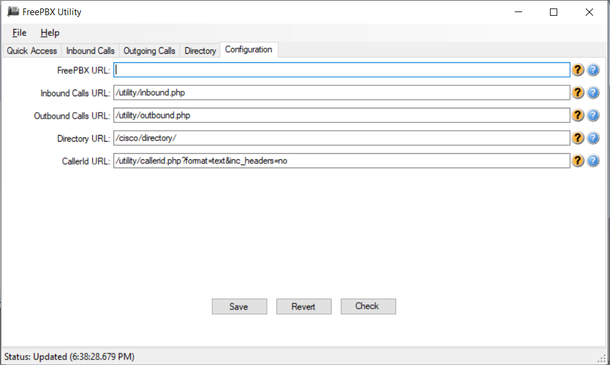
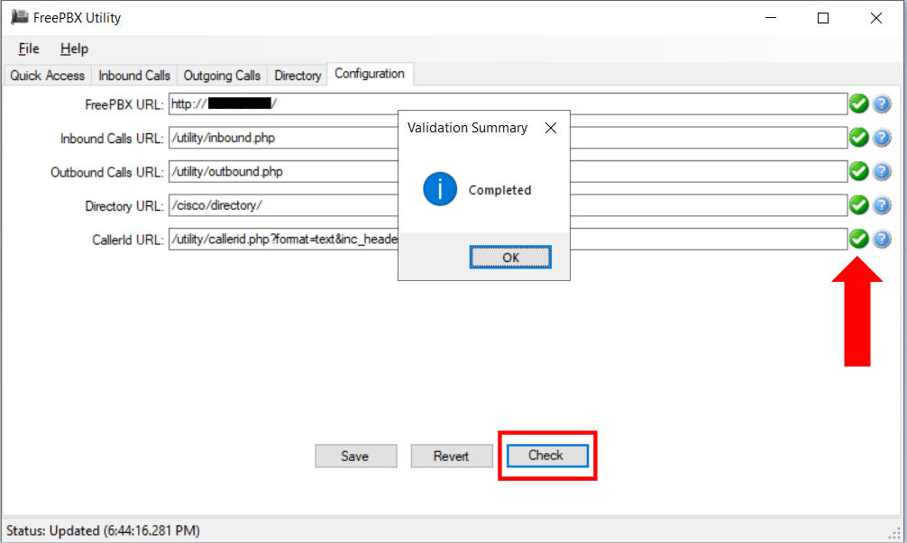
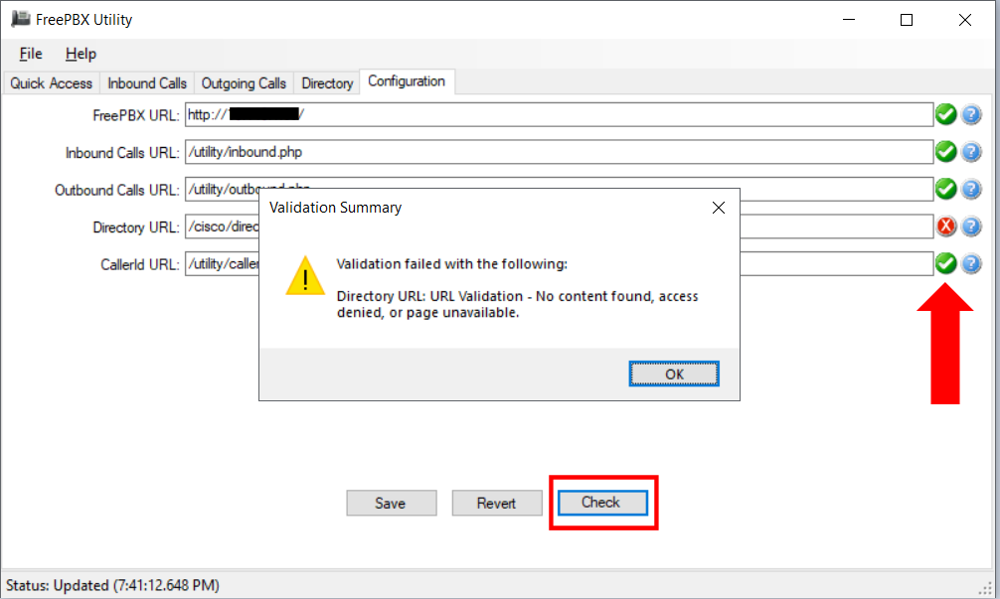

The Configuration tab allows you to modify the URLs for the report pages. The FreePBX URL needs to be the URL for the FreePBX
server. The remaining URLS may be complete URLs or relative to the FreePBX URL.

Clicking "Check" button will perform a test to make certain that the application can connect to each URL. It does not validate that they provide the correct content. The check only validates that a response is received from the Apache server running on the FreePBX machine.
After clicking the "Check" button, a validation summary dialog will appear and the status indicators will
change to green checkmarks for valid items and red X for failed items.

